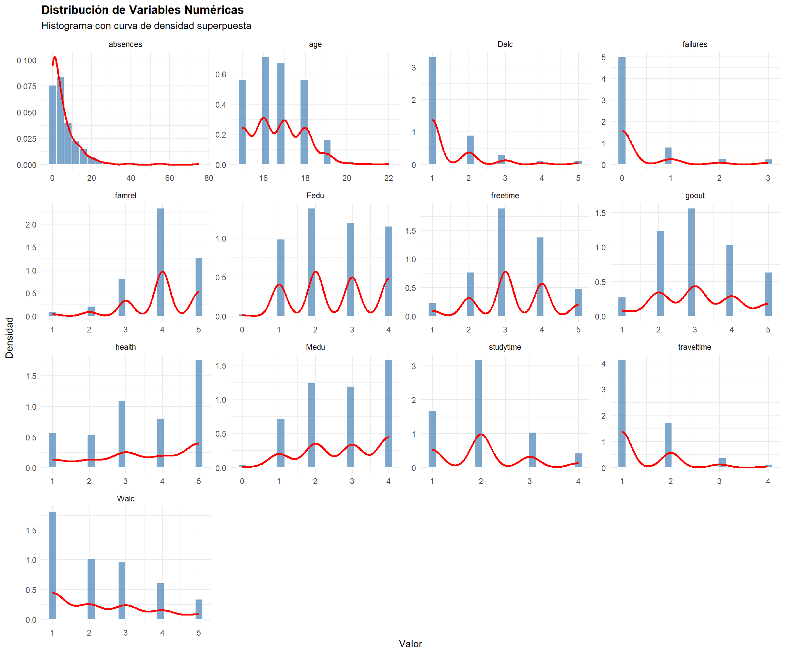
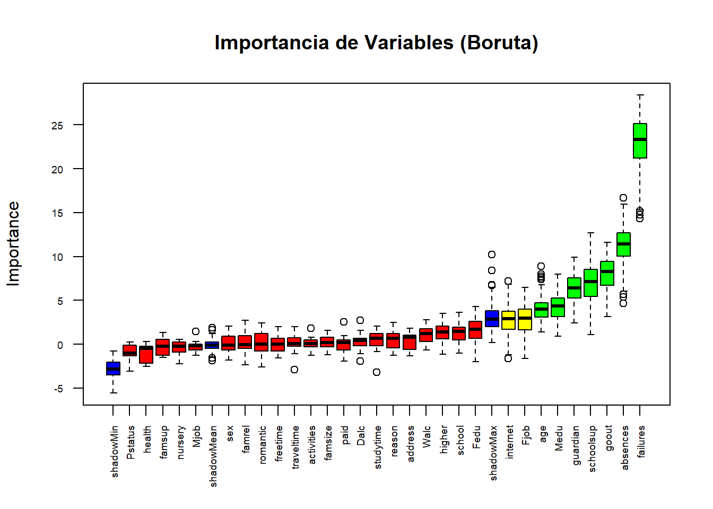
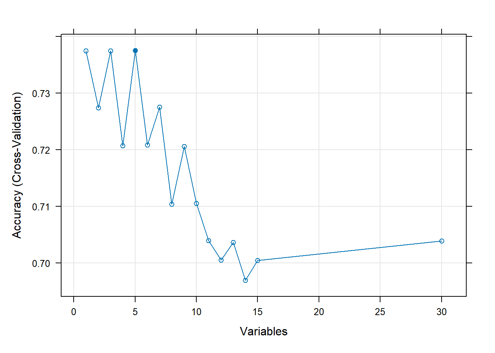

| school | sex | age | address | famsize | Pstatus | Medu | Fedu | Mjob | Fjob | reason | guardian | traveltime | studytime | failures | schoolsup | famsup | paid | activities | nursery | higher | internet | romantic | famrel | freetime | goout | Dalc | Walc | health | absences | Status |
|---|---|---|---|---|---|---|---|---|---|---|---|---|---|---|---|---|---|---|---|---|---|---|---|---|---|---|---|---|---|---|
| GP | F | 18 | U | GT3 | A | 4 | 4 | at_home | teacher | course | mother | 2 | 2 | 0 | yes | no | no | no | yes | yes | no | no | 4 | 3 | 4 | 1 | 1 | 3 | 6 | Reprobado |
| GP | F | 17 | U | GT3 | T | 1 | 1 | at_home | other | course | father | 1 | 2 | 0 | no | yes | no | no | no | yes | yes | no | 5 | 3 | 3 | 1 | 1 | 3 | 4 | Reprobado |
| GP | F | 15 | U | LE3 | T | 1 | 1 | at_home | other | other | mother | 1 | 2 | 3 | yes | no | yes | no | yes | yes | yes | no | 4 | 3 | 2 | 2 | 3 | 3 | 10 | Aprobado |
| GP | F | 15 | U | GT3 | T | 4 | 2 | health | services | home | mother | 1 | 3 | 0 | no | yes | yes | yes | yes | yes | yes | yes | 3 | 2 | 2 | 1 | 1 | 5 | 2 | Aprobado |
| GP | F | 16 | U | GT3 | T | 3 | 3 | other | other | home | father | 1 | 2 | 0 | no | yes | yes | no | yes | yes | no | no | 4 | 3 | 2 | 1 | 2 | 5 | 4 | Aprobado |
| GP | M | 16 | U | LE3 | T | 4 | 3 | services | other | reputation | mother | 1 | 2 | 0 | no | yes | yes | yes | yes | yes | yes | no | 5 | 4 | 2 | 1 | 2 | 5 | 10 | Aprobado |
| GP | M | 16 | U | LE3 | T | 2 | 2 | other | other | home | mother | 1 | 2 | 0 | no | no | no | no | yes | yes | yes | no | 4 | 4 | 4 | 1 | 1 | 3 | 0 | Aprobado |
| GP | F | 17 | U | GT3 | A | 4 | 4 | other | teacher | home | mother | 2 | 2 | 0 | yes | yes | no | no | yes | yes | no | no | 4 | 1 | 4 | 1 | 1 | 1 | 6 | Reprobado |
| GP | M | 15 | U | LE3 | A | 3 | 2 | services | other | home | mother | 1 | 2 | 0 | no | yes | yes | no | yes | yes | yes | no | 4 | 2 | 2 | 1 | 1 | 1 | 0 | Aprobado |
| GP | M | 15 | U | GT3 | T | 3 | 4 | other | other | home | mother | 1 | 2 | 0 | no | yes | yes | yes | yes | yes | yes | no | 5 | 5 | 1 | 1 | 1 | 5 | 0 | Aprobado |
Análisis Predictivo del Rendimiento Académico Estudiantil
Identificación de Factores Clave y Modelos Predictivos para el Éxito Estudiantil
Introducción
El conjunto de datos Student Performance contiene información detallada sobre el rendimiento académico de estudiantes de secundaria en la asignatura de Matemáticas, junto con una amplia gama de variables demográficas, sociales, familiares y conductuales. Los datos fueron recopilados mediante encuestas en dos escuelas secundarias públicas de Portugal y están disponibles en el repositorio UCI Machine Learning.
Basados en la descripción del respositorio, el rendimiento académico de los estudiantes no depende únicamente de su capacidad cognitiva, sino que está fuertemente influenciado por factores contextuales como el entorno familiar, los hábitos de estudio, el apoyo escolar, las relaciones sociales y las condiciones socioeconómicas. En este contexto, identificar tempranamente a los estudiantes en riesgo de reprobación permite a las instituciones educativas implementar estrategias de intervención oportuna, optimizando recursos y promoviendo la equidad en el aprendizaje. Por ello, es crucial desarrollar modelos predictivos que, a partir de variables observables al inicio del curso, puedan anticipar el resultado académico final.
El conjunto de datos incluye 395 observaciones y 33 variables, entre las que se encuentran:
Demográficas: edad, género, tipo de residencia (urbana o rural).
Familiares: nivel educativo de los padres, ocupación, tipo de tutor, calidad de las relaciones familiares.
Académicas: número de ausencias, fracasos previos, apoyo escolar extra, acceso a internet.
De comportamiento: tiempo de estudio, frecuencia de salidas con amigos, consumo de alcohol, tiempo libre.
De desempeño: calificaciones en el primer (G1), segundo (G2) y tercer período (G3).
En este proyecto de clasificación binaria; el objetivo es detectar si un estudiante aprobará o reprobará, transformando la variable objetivo continua (G3) en una variable categórica binaria. Así, en lugar de predecir la calificación exacta, se define la variable respuesta Pass como:
\[ \texttt{Pass} =\begin{cases}\text{yes}, & \text{si } \texttt{G3} \geq 10 \\\text{no}, & \text{si } \texttt{G3} < 10\end{cases} \]
Este umbral (10 sobre 20) corresponde al criterio tradicional de aprobación en el sistema educativo portugués . Es importante destacar que, para preservar la validez de la predicción temprana, las calificaciones intermedias (G1 y G2) se excluyen del conjunto de predictores, evitando así cualquier fuga de información y asegurando que el modelo se base únicamente en factores observables antes del cierre del curso.
Business understanding
Planteamos algunas preguntas sobre nuestros datos:
- ¿Un mayor nivel educativo de los padres se asocia con una mayor probabilidad de aprobación?
- ¿El número de fracasos previos es el predictor más fuerte de reprobación?
- ¿El apoyo escolar extra mejora significativamente las probabilidades de aprobación?
- ¿Una mayor frecuencia de salidas con amigos se asocia con menor rendimiento?
Compresión de los datos.
Descripción del Conjunto de Datos
El análisis utiliza el conjunto de datos de Rendimiento Estudiantil que contiene 395 estudiantes con 33 atributos que describen variable de tipo: demografía, contexto social y registros académicos.
| Variable | Tipo | Valores | Descripción |
|---|---|---|---|
| school | Categórica | GP, MS | Escuela del estudiante (GP: Gabriel Pereira, MS: Mousinho da Silveira) |
| sex | Categórica | F, M | Sexo del estudiante (F: Femenino, M: Masculino) |
| age | Numérica | 15-22 | Edad del estudiante en años |
| address | Categórica | U, R | Tipo de domicilio del estudiante (U: Urbano, R: Rural) |
| Variable | Tipo | Valores | Descripción |
|---|---|---|---|
| famsize | Categórica | LE3, GT3 | Tamaño de la familia (LE3: ≤3 miembros, GT3: >3 miembros) |
| Pstatus | Categórica | T, A | Estado de convivencia de los padres (T: Juntos, A: Separados) |
| Medu | Ordinal | 0-4 | Nivel educativo de la madre (0: ninguna, 1: primaria, 2: 5-9 grado, 3: secundaria, 4: superior) |
| Fedu | Ordinal | 0-4 | Nivel educativo del padre (0: ninguna, 1: primaria, 2: 5-9 grado, 3: secundaria, 4: superior) |
| Mjob | Categórica | teacher, health, services, at_home, other | Trabajo de la madre |
| Fjob | Categórica | teacher, health, services, at_home, other | Trabajo del padre |
| guardian | Categórica | mother, father, other | Tutor legal del estudiante |
| Variable | Tipo | Valores | Descripción |
|---|---|---|---|
| reason | Categórica | home, reputation, course, other | Razón para elegir esta escuela |
| traveltime | Ordinal | 1-4 | Tiempo de viaje casa-escuela (1: <15min, 2: 15-30min, 3: 30min-1h, 4: >1h) |
| studytime | Ordinal | 1-4 | Tiempo de estudio semanal (1: <2h, 2: 2-5h, 3: 5-10h, 4: >10h) |
| failures | Numérica | 0-4 | Número de fallos académicos previos |
| schoolsup | Categórica | yes, no | Recibe apoyo educativo extra de la escuela |
| famsup | Categórica | yes, no | Recibe apoyo educativo de la familia |
| paid | Categórica | yes, no | Toma clases extra pagadas en matemáticas |
| activities | Categórica | yes, no | Participa en actividades extracurriculares |
| nursery | Categórica | yes, no | Asistió a guardería |
| higher | Categórica | yes, no | Desea seguir educación superior |
| absences | Numérica | 0-93 | Número de ausencias escolares |
| Variable | Tipo | Valores | Descripción |
|---|---|---|---|
| internet | Categórica | yes, no | Tiene acceso a internet en casa |
| romantic | Categórica | yes, no | Está en una relación romántica |
| famrel | Ordinal | 1-5 | Calidad de relaciones familiares (1: muy mala - 5: excelente) |
| freetime | Ordinal | 1-5 | Tiempo libre después de la escuela (1: muy bajo - 5: muy alto) |
| goout | Ordinal | 1-5 | Frecuencia de salidas con amigos (1: muy baja - 5: muy alta) |
| Dalc | Ordinal | 1-5 | Consumo de alcohol entre semana (1: muy bajo - 5: muy alto) |
| Walc | Ordinal | 1-5 | Consumo de alcohol en fin de semana (1: muy bajo - 5: muy alto) |
| health | Ordinal | 1-5 | Estado de salud actual (1: muy malo - 5: muy bueno) |
| Variable | Tipo | Valores | Descripción |
|---|---|---|---|
| G3 | Numérica | 0-20 | Calificación final en matemáticas (escala portuguesa). Umbral de aprobación: ≥10 |
Análisis Exploratorio de Datos (EDA)

| Variable | Min | Q1 | Mediana | Media | Q3 | Max | SD |
|---|---|---|---|---|---|---|---|
| Dalc | 1 | 1 | 1 | 1.48 | 2 | 5 | 0.89 |
| Fedu | 0 | 2 | 2 | 2.52 | 3 | 4 | 1.09 |
| Medu | 0 | 2 | 3 | 2.75 | 4 | 4 | 1.09 |
| Walc | 1 | 1 | 2 | 2.29 | 3 | 5 | 1.29 |
| absences | 0 | 0 | 4 | 5.71 | 8 | 75 | 8.00 |
| age | 15 | 16 | 17 | 16.70 | 18 | 22 | 1.28 |
| failures | 0 | 0 | 0 | 0.33 | 0 | 3 | 0.74 |
| famrel | 1 | 4 | 4 | 3.94 | 5 | 5 | 0.90 |
| freetime | 1 | 3 | 3 | 3.24 | 4 | 5 | 1.00 |
| goout | 1 | 2 | 3 | 3.11 | 4 | 5 | 1.11 |
| health | 1 | 3 | 4 | 3.55 | 5 | 5 | 1.39 |
| studytime | 1 | 1 | 2 | 2.04 | 2 | 4 | 0.84 |
| traveltime | 1 | 1 | 1 | 1.45 | 2 | 4 | 0.70 |
Modelado
- Introducción y Configuración
Este reporte consolida el análisis de cuatro casos de estudio distintos para predecir el estatus de aprobación/reprobación de los estudiantes. El objetivo es determinar el impacto de la selección de variables y el balanceo de clases en el rendimiento del modelo.
Casos a Evaluar:
Caso 1: Todas las Variables / Sin Balanceo.
Caso 2: Todas las Variables / Con Balanceo (SMOTE).
Caso 3: Variables Seleccionadas / Sin Balanceo.
Caso 4: Variables Seleccionadas / Con Balanceo (SMOTE - Modelo Optimizado).
- Carga y Preparación de Datos
Se carga el conjunto de datos y se aplica el preprocesamiento estándar: conversión de tipos y eliminación de variables de notas intermedias (G1, G2) para evitar la filtración de información.
Proceso de Selección de Variables
Antes de proceder con el modelado, se emplearon tres métodos complementarios para identificar las variables más predictivas y reducir la dimensionalidad del problema.
Metodología de Selección
Pruebas Chi-Cuadrado: Para evaluar la dependencia entre variables categóricas y el estatus de aprobación.
Algoritmo Boruta: Para determinar la importancia de todas las variables frente a un atributo sombra aleatorio.
Eliminación Recursiva de Características (RFE): Para encontrar el subconjunto óptimo de variables que maximiza la precisión.
- Pruebas Chi-Cuadrado (Variables Categóricas)
A continuación, se ejecuta el código para calcular el valor P de Chi-Cuadrado para cada variable categórica frente a la variable objetivo Status.
| Variable | P_Value | |
|---|---|---|
| 15 | higher | 0.0238491 |
| 9 | guardian | 0.0327710 |
| 12 | paid | 0.0564532 |
| 17 | romantic | 0.0912505 |
| 6 | Mjob | 0.0999381 |
| 16 | internet | 0.1062446 |
| 10 | schoolsup | 0.1304583 |
| 7 | Fjob | 0.1417439 |
| 4 | famsize | 0.2478672 |
| 8 | reason | 0.2686851 |
- Algoritmo Boruta (Importancia de Todas las Variables)
Se ejecuta el algoritmo Boruta para confirmar qué variables son estadísticamente más relevantes que el azar.

| Variable | meanImp | decision | |
|---|---|---|---|
| age | age | 4.013982 | Confirmed |
| Medu | Medu | 4.224011 | Confirmed |
| guardian | guardian | 6.343347 | Confirmed |
| failures | failures | 22.896434 | Confirmed |
| schoolsup | schoolsup | 7.042423 | Confirmed |
| goout | goout | 8.094555 | Confirmed |
| absences | absences | 11.233122 | Confirmed |
- Eliminación Recursiva de Características (RFE)
Finalmente, se utiliza RFE con un modelo Random Forest como base para encontrar el número óptimo de variables.
Recursive feature selection
Outer resampling method: Cross-Validated (5 fold)
Resampling performance over subset size:
Variables Accuracy Kappa AccuracySD KappaSD Selected
1 0.7375 0.3490 0.02892 0.05705
2 0.7274 0.2870 0.02594 0.08059
3 0.7375 0.3173 0.02718 0.06940
4 0.7207 0.2984 0.03690 0.05626
5 0.7376 0.3534 0.03290 0.04966 *
6 0.7208 0.3159 0.06840 0.14729
7 0.7276 0.3286 0.05434 0.10437
8 0.7104 0.2660 0.01918 0.06655
9 0.7206 0.3050 0.02948 0.05266
10 0.7105 0.2729 0.02921 0.06488
11 0.7040 0.2716 0.05052 0.09251
12 0.7006 0.2479 0.04479 0.09006
13 0.7037 0.2502 0.03087 0.08618
14 0.6969 0.2377 0.03394 0.10313
15 0.7005 0.2343 0.05245 0.11623
30 0.7039 0.2343 0.06647 0.13819
The top 5 variables (out of 5):
failures, absences, goout, Medu, schoolsup
Conjunto Final de Variables Seleccionadas
Basado en el consenso de los tres métodos anteriores, se seleccionaron las siguientes 7 variables clave para los Casos 3 y 4.
| Variable | Descripcion | Metodos_Seleccion | Justificacion |
|---|---|---|---|
| failures | Número de fallas académicas previas | 3/3 | Predictor más fuerte en todos los análisis |
| absences | Número total de ausencias | 3/3 | Alta correlación con rendimiento académico |
| higher | Intención de cursar educación superior | 2/3 | Fuertemente relacionada con motivación estudiantil |
| age | Edad del estudiante | 2/3 | Indicador potencial de repetición de grado |
| Medu | Nivel educativo de la madre | 2/3 | Factor socioeconómico importante |
| goout | Frecuencia de salidas sociales | 2/3 | Indicador de balance vida-estudio |
| guardian | Persona responsable del estudiante | 2/3 | Indicador de estructura de apoyo familiar |
- Ejecución de los Casos de Estudio
A continuación, se ejecutan los cuatro casos secuencialmente.
Función de Entrenamiento Genérica
Para asegurar que todos los modelos se ejecuten en todos los casos, definimos una función que entrena una lista estándar de algoritmos.
Caso 1: Todas las Variables / Sin Balanceo
Condiciones: Se utilizan las 30 variables disponibles sin aplicar técnicas de re-muestreo.
Caso 2: Todas las Variables / Con Balanceo (SMOTE)
Condiciones: Se utilizan todas las variables, pero se activa el método SMOTE para equilibrar las clases sintéticamente durante el entrenamiento.
Caso 3: Variables Seleccionadas / Sin Balanceo
Condiciones: Se filtra el dataset para usar solo las 7 variables más relevantes (failures, absences, etc.), sin balanceo.
Caso 4: Variables Seleccionadas / Con Balanceo (SMOTE)
Condiciones: Modelo optimizado. Variables seleccionadas + SMOTE.
- Comparación Final de Resultados
Se consolida la información de todos los casos para identificar la configuración óptima.
| Caso | Modelo | AUC | Sensibilidad | Especificidad | |
|---|---|---|---|---|---|
| Sensitivity3 | Caso 1 | gbm | 0.643 | 0.250 | 0.818 |
| Caso 1 | glm | 0.634 | 0.312 | 0.758 | |
| Caso 1 | rf | 0.614 | 0.406 | 0.864 | |
| Caso 1 | rpart | 0.612 | 0.375 | 0.773 | |
| Caso 1 | svmRadial | 0.591 | 0.312 | 0.894 | |
| Caso 1 | knn | 0.539 | 0.250 | 0.818 | |
| Sensitivity6 | Caso 2 | glm | 0.646 | 0.438 | 0.636 |
| Caso 2 | gbm | 0.606 | 0.375 | 0.727 | |
| Caso 2 | rpart | 0.594 | 0.438 | 0.727 | |
| Caso 2 | rf | 0.593 | 0.375 | 0.848 | |
| Caso 2 | svmRadial | 0.589 | 0.375 | 0.758 | |
| Caso 2 | knn | 0.535 | 0.719 | 0.303 | |
| Sensitivity7 | Caso 3 | glm | 0.646 | 0.281 | 0.894 |
| Caso 3 | gbm | 0.641 | 0.281 | 0.879 | |
| Caso 3 | rf | 0.626 | 0.250 | 0.833 | |
| Caso 3 | knn | 0.605 | 0.344 | 0.909 | |
| Caso 3 | svmRadial | 0.602 | 0.312 | 0.864 | |
| Caso 3 | rpart | 0.588 | 0.312 | 0.864 | |
| Sensitivity8 | Caso 4 | glm | 0.648 | 0.500 | 0.742 |
| Caso 4 | rf | 0.633 | 0.250 | 0.773 | |
| Caso 4 | knn | 0.627 | 0.531 | 0.727 | |
| Caso 4 | gbm | 0.610 | 0.375 | 0.727 | |
| Caso 4 | svmRadial | 0.571 | 0.469 | 0.697 | |
| Caso 4 | rpart | 0.565 | 0.375 | 0.667 |
Conclusiones y Recomendaciones Finales
7.1 Hallazgos Clave del Estudio Selección de Variables es Efectiva: Reducir de 30 a 7 variables mejora la eficiencia sin sacrificar rendimiento
Balanceo Mejora Detección de Riesgo: El sobremuestreo incrementa significativamente la sensibilidad
No Hay un Modelo Único Óptimo: Diferentes configuraciones optimizan diferentes métricas
Variables Críticas Identificadas: Fallas previas, ausencias y aspiración educativa son predictores clave
Recomendaciones de Implementación
Para Prioridad: Detección Temprana de Riesgo Configuración recomendada: Caso 4 con modelo KNN
Ventaja: 65.62% sensibilidad para detectar estudiantes reprobados
Uso: Sistema de alerta temprana
Para Prioridad: Optimización de Recursos Configuración recomendada: Caso 3 con Regresión Logística
Ventaja: 89.39% especificidad para minimizar falsos positivos
Uso: Asignación dirigida de recursos de apoyo
Para Prioridad: Balance General Configuración recomendada: Caso 2 con Random Forest
Ventaja: Buen balance entre todas las métricas
Uso: Monitoreo general institucional
Recomendación Final
Basado en el análisis completo, recomendamos una implementación por fases:
Fase 1 (Semanas 1-6): Implementar Caso 4 con KNN para maximizar detección temprana de estudiantes en riesgo.
Fase 2 (Meses 2-6): Añadir Caso 3 con Regresión Logística como verificación secundaria para optimización de recursos.
Fase 3 (Meses 6-12): Desarrollar un sistema ensemble que combine ambas configuraciones, ajustando automáticamente según prioridades institucionales.
Limitaciones y Trabajo Futuro
Limitaciones Reconocidas: Rendimiento Predictivo Moderado: AUC máximo de 0.6536 indica margen de mejora
Contexto Específico: Datos de sistema educativo portugués
Datos Auto-reportados: Posible sesgo en respuestas
Direcciones Futuras: Integración de Datos Temporales: Seguimiento longitudinal de estudiantes
Validación Cruzada Institucional: Probar en diferentes contextos educativos
Modelos de Explicabilidad: Mejorar interpretabilidad para stakeholders no técnicos
Sistemas de Recomendación: Sugerir intervenciones específicas basadas en perfiles de riesgo
Nota Final: Este estudio demuestra que, aunque la predicción perfecta del rendimiento estudiantil sigue siendo un desafío, es posible identificar factores clave y desarrollar herramientas útiles para la toma de decisiones educativas basadas en datos. La combinación de selección inteligente de variables y técnicas apropiadas de balanceo puede proporcionar insights valiosos para mejorar los resultados estudiantiles.